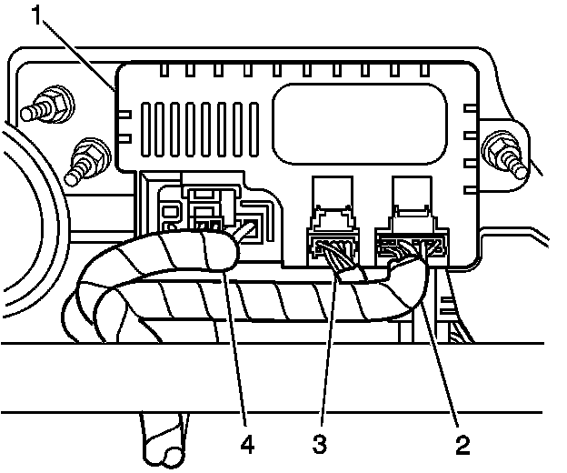
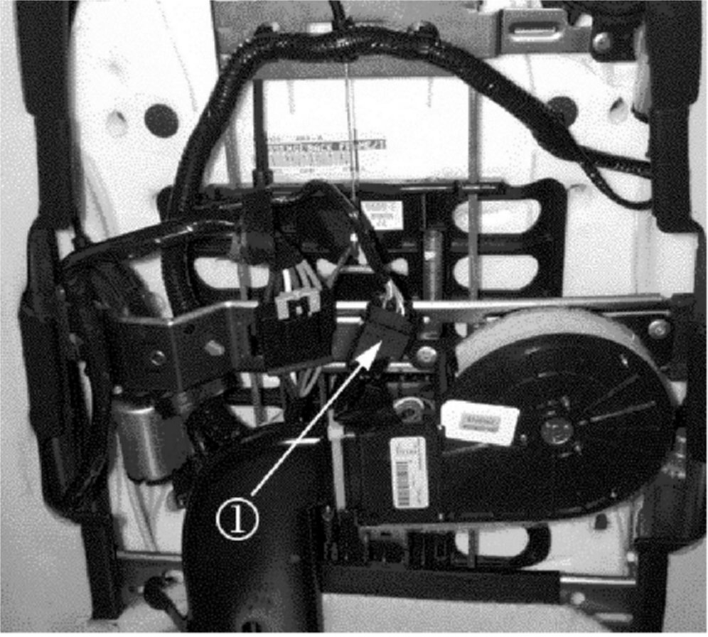
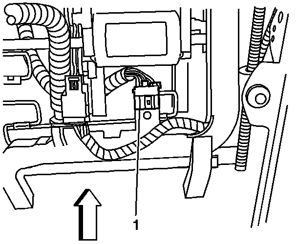

A/C - Heated/Cooled Seat Diagnostics
Bulletin No.: 06-08-50-013Date: November 09, 2006
INFORMATION
Subject:
Diagnostic Information on Inoperative Heated/Cooled Seats
Models:
2007 Cadillac Escalade, Escalade ESV, Escalade EXT
The purpose of this bulletin is to provide dealers with information to help diagnose inoperative heated/cooled seats (seat cushion, seat back or both).
Both Seat Back AND Seat Cushion Heated/Cooled Functions Inoperative

Verify that connections to the heat/cool seat module (1), which is located under the passenger side seat, are fully seated.
The smaller 10- and 16-way connectors (2, 3) should have the blue CPA fully engaged.
The 12-way connector (4) should be inspected to make sure that it is fully seated.
Seat Back Heated/Cooled Functions Inoperative

Verify that the black 8-way connector (1) is fully engaged. To gain access this connector, remove the plastic seat back panel. The connector is located just above the blower.
Attempt to pull the mating connectors that go to the blower and seat back harness apart WITHOUT depressing the release lever. If the connector disengages, force the connectors together until a "click" is heard and the connectors can no longer be pulled apart without depressing the release lever.
Seat Cushion Heated/Cooled Functions Inoperative

Verify that the black 8-way connector (1) that connects the seat wiring harness to the blower takeout is properly seated. This connector is located under each seat and can be accessed from the rear underside of the seat.
Force the connectors together until a "click" is heard, and then attempt to disengage the connector without depressing the lever release. If you are unable to disconnect, a full connection has been attained.

Disclaimer